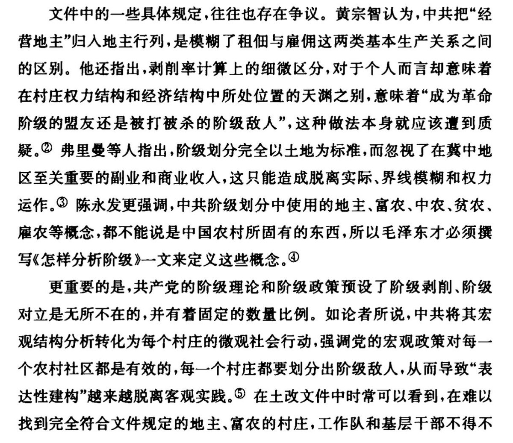
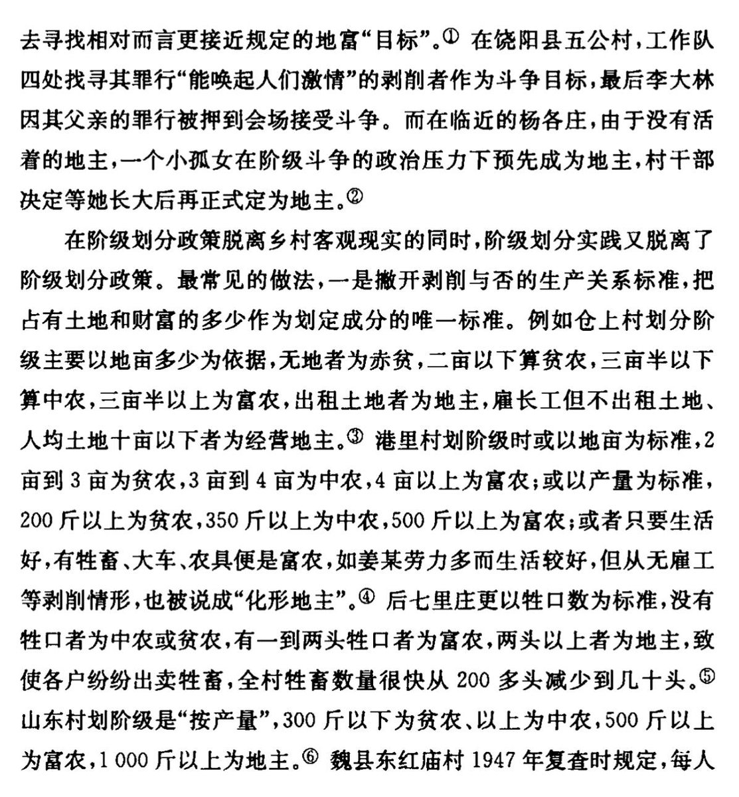
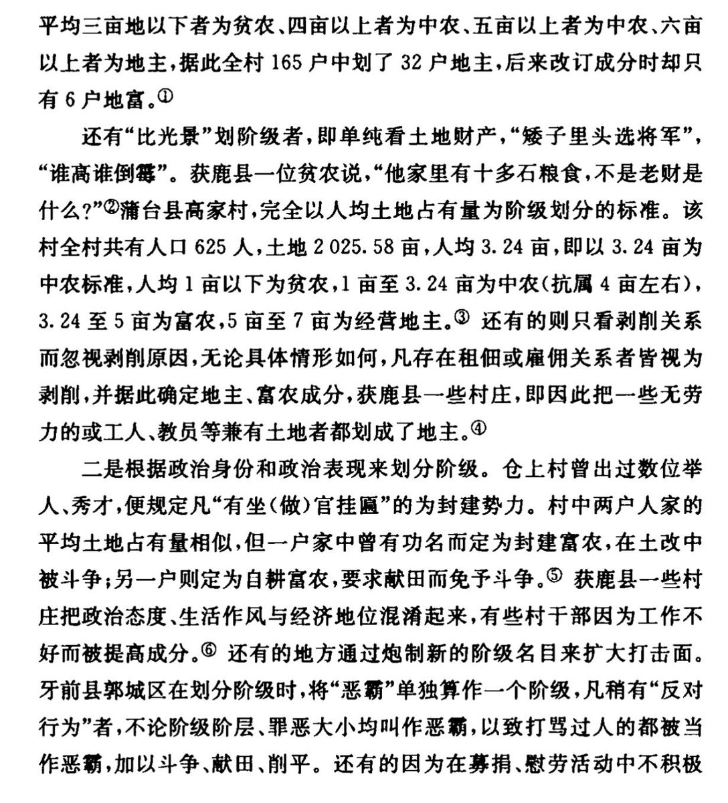

RT @liulingyue: 其实你还没明白，发明这套对立关系的目的是分而治之，树个稻草人（地主）当靶子，把一切农村复杂的利益冲突、宗族恩怨、甚至天灾人祸都甩给它，再发动其他人去斗靶子，即使最核心的问题不在这上面。
在一些完全没有雇佣关系的村子，那就找日子相对好一点的家庭。……

在一些完全没有雇佣关系的村子，那就找日子相对好一点的家庭。……



其实你还没明白，发明这套对立关系的目的是分而治之，树个稻草人（地主）当靶子，把一切农村复杂的利益冲突、宗族恩怨、甚至天灾人祸都甩给它，再发动其他人去斗靶子，即使最核心的问题不在这上面。
在一些完全没有雇佣关系的村子，那就找日子相对好一点的家庭。 https://t.co/Vy6iEbBjd0 https://t.co/YvRPoYIbyQ
在一些完全没有雇佣关系的村子，那就找日子相对好一点的家庭。 https://t.co/Vy6iEbBjd0 https://t.co/YvRPoYIbyQ